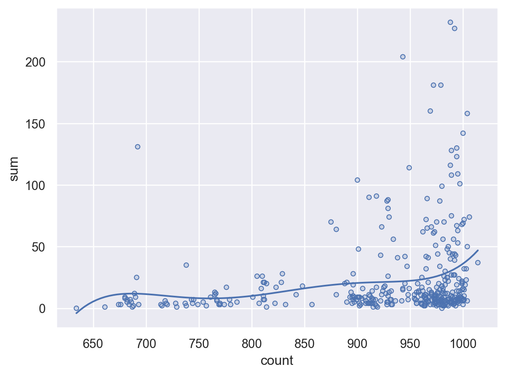
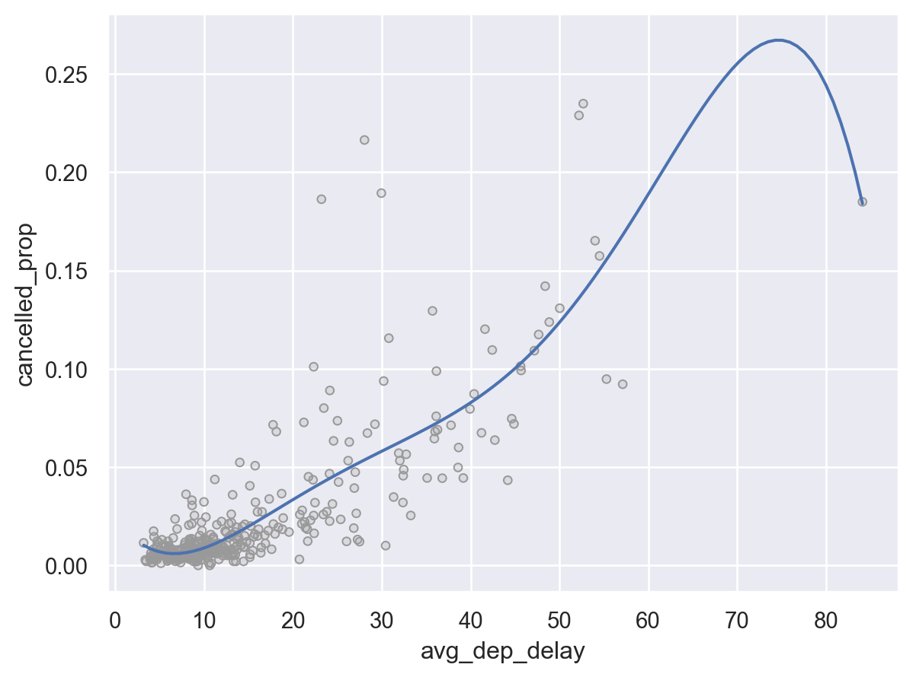
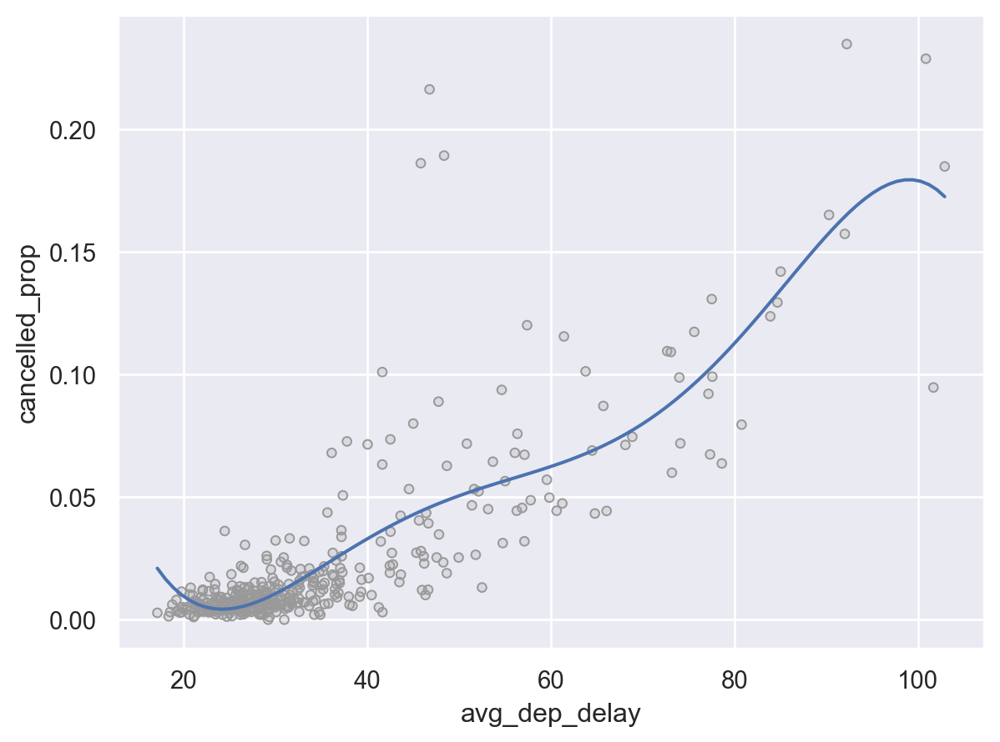
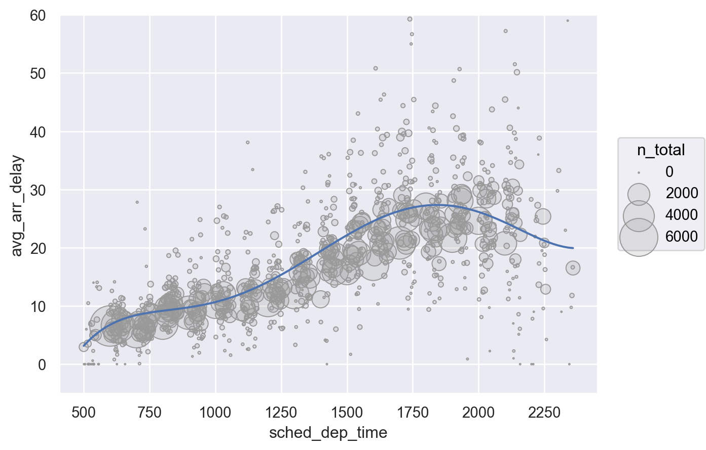
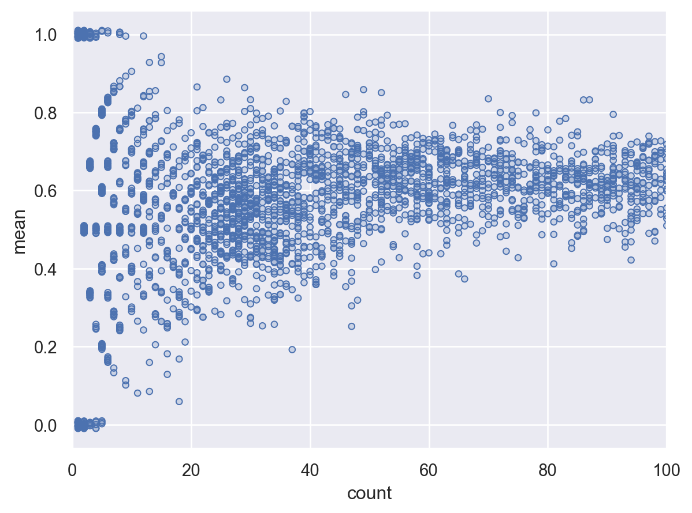
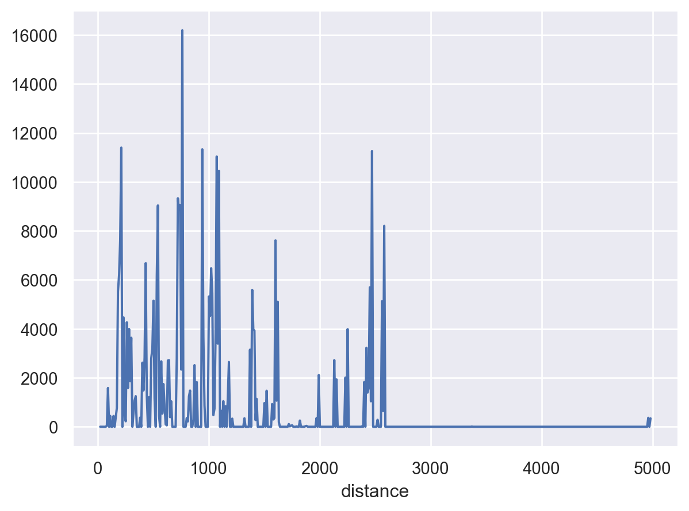
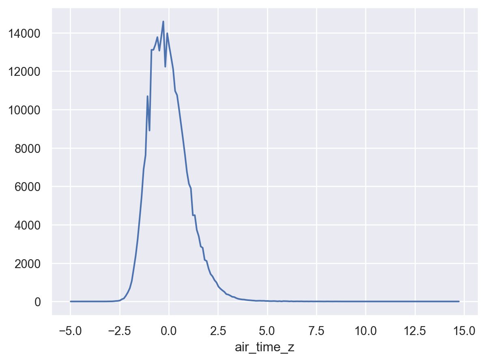

Load Packages
# numerical calculation & data frames
import numpy as np
import pandas as pd
# visualization
import matplotlib.pyplot as plt
import seaborn as sns
import seaborn.objects as so
# statistics
import statsmodels.api as smR for Data Science by Wickham & Grolemund
# numerical calculation & data frames
import numpy as np
import pandas as pd
# visualization
import matplotlib.pyplot as plt
import seaborn as sns
import seaborn.objects as so
# statistics
import statsmodels.api as sm# pandas options
pd.set_option("mode.copy_on_write", True)
pd.options.display.float_format = '{:.5f}'.format # pd.reset_option('display.float_format')
pd.options.display.max_rows = 7
# Numpy options
np.set_printoptions(precision = 2, suppress=True)# 1. Had an arrival delay of two or more hours
# Load the nycflight13 dataset
flights = sm.datasets.get_rdataset("flights", "nycflights13").data.drop(columns="time_hour")flights.query('arr_delay > 120').head(3) year month day dep_time sched_dep_time dep_delay arr_time \
119 2013 1 1 811.00 630 101.00 1047.00
151 2013 1 1 848.00 1835 853.00 1001.00
218 2013 1 1 957.00 733 144.00 1056.00
sched_arr_time arr_delay carrier flight tailnum origin dest air_time \
119 830 137.00 MQ 4576 N531MQ LGA CLT 118.00
151 1950 851.00 MQ 3944 N942MQ JFK BWI 41.00
218 853 123.00 UA 856 N534UA EWR BOS 37.00
distance hour minute
119 544 6 30
151 184 18 35
218 200 7 33 # 2. Flew to Houston (IAH or HOU)
flights.query('dest == "IAH" | dest == "HOU"').head(3) year month day dep_time sched_dep_time dep_delay arr_time \
0 2013 1 1 517.00 515 2.00 830.00
1 2013 1 1 533.00 529 4.00 850.00
32 2013 1 1 623.00 627 -4.00 933.00
sched_arr_time arr_delay carrier flight tailnum origin dest air_time \
0 819 11.00 UA 1545 N14228 EWR IAH 227.00
1 830 20.00 UA 1714 N24211 LGA IAH 227.00
32 932 1.00 UA 496 N459UA LGA IAH 229.00
distance hour minute
0 1400 5 15
1 1416 5 29
32 1416 6 27 # 3. Departed in summer (July, August, and September)
flights.query('month in [7, 8, 9]').head(3) year month day dep_time sched_dep_time dep_delay arr_time \
250450 2013 7 1 1.00 2029 212.00 236.00
250451 2013 7 1 2.00 2359 3.00 344.00
250452 2013 7 1 29.00 2245 104.00 151.00
sched_arr_time arr_delay carrier flight tailnum origin dest \
250450 2359 157.00 B6 915 N653JB JFK SFO
250451 344 0.00 B6 1503 N805JB JFK SJU
250452 1 110.00 B6 234 N348JB JFK BTV
air_time distance hour minute
250450 315.00 2586 20 29
250451 200.00 1598 23 59
250452 66.00 266 22 45 # 4. Arrived more than two hours late, but didn’t leave late
flights.query('arr_delay > 120 & dep_delay <= 0').head(3) year month day dep_time sched_dep_time dep_delay arr_time \
22911 2013 1 27 1419.00 1420 -1.00 1754.00
33011 2013 10 7 1350.00 1350 0.00 1736.00
33019 2013 10 7 1357.00 1359 -2.00 1858.00
sched_arr_time arr_delay carrier flight tailnum origin dest \
22911 1550 124.00 MQ 3728 N1EAMQ EWR ORD
33011 1526 130.00 EV 5181 N611QX LGA MSN
33019 1654 124.00 AA 1151 N3CMAA LGA DFW
air_time distance hour minute
22911 135.00 719 14 20
33011 117.00 812 13 50
33019 192.00 1389 13 59 # 5. Were delayed by at least an hour, but made up over 30 minutes in flight
flights.query('dep_delay > 60 & arr_delay - dep_delay < -30').head(5) year month day dep_time sched_dep_time dep_delay arr_time \
815 2013 1 1 2205.00 1720 285.00 46.00
832 2013 1 1 2326.00 2130 116.00 131.00
2286 2013 1 3 1503.00 1221 162.00 1803.00
2508 2013 1 3 1839.00 1700 99.00 2056.00
2522 2013 1 3 1850.00 1745 65.00 2148.00
sched_arr_time arr_delay carrier flight tailnum origin dest air_time \
815 2040 246.00 AA 1999 N5DNAA EWR MIA 146.00
832 18 73.00 B6 199 N594JB JFK LAS 290.00
2286 1555 128.00 UA 551 N835UA EWR SFO 320.00
2508 1950 66.00 AA 575 N631AA JFK EGE 239.00
2522 2120 28.00 AA 177 N332AA JFK SFO 314.00
distance hour minute
815 1085 17 20
832 2248 21 30
2286 2565 12 21
2508 1747 17 0
2522 2586 17 45 # 6. Departed between midnight and 6am (inclusive)
flights.query('dep_time >= 0 & dep_time <= 600').head(3) year month day dep_time sched_dep_time dep_delay arr_time \
0 2013 1 1 517.00 515 2.00 830.00
1 2013 1 1 533.00 529 4.00 850.00
2 2013 1 1 542.00 540 2.00 923.00
sched_arr_time arr_delay carrier flight tailnum origin dest air_time \
0 819 11.00 UA 1545 N14228 EWR IAH 227.00
1 830 20.00 UA 1714 N24211 LGA IAH 227.00
2 850 33.00 AA 1141 N619AA JFK MIA 160.00
distance hour minute
0 1400 5 15
1 1416 5 29
2 1089 5 40 # 7. Find the fastest flights.
(
flights.assign(speed=flights.distance / flights.air_time)
.sort_values(by="speed", ascending=False)
.head(7)
) year month day dep_time sched_dep_time dep_delay arr_time \
216447 2013 5 25 1709.00 1700 9.00 1923.00
251999 2013 7 2 1558.00 1513 45.00 1745.00
205388 2013 5 13 2040.00 2025 15.00 2225.00
157516 2013 3 23 1914.00 1910 4.00 2045.00
10223 2013 1 12 1559.00 1600 -1.00 1849.00
70640 2013 11 17 650.00 655 -5.00 1059.00
129835 2013 2 21 2355.00 2358 -3.00 412.00
sched_arr_time arr_delay carrier flight tailnum origin dest \
216447 1937 -14.00 DL 1499 N666DN LGA ATL
251999 1719 26.00 EV 4667 N17196 EWR MSP
205388 2226 -1.00 EV 4292 N14568 EWR GSP
157516 2043 2.00 EV 3805 N12567 EWR BNA
10223 1917 -28.00 DL 1902 N956DL LGA PBI
70640 1150 -51.00 DL 315 N3768 JFK SJU
129835 438 -26.00 B6 707 N779JB JFK SJU
air_time distance hour minute speed
216447 65.00 762 17 0 11.72
251999 93.00 1008 15 13 10.84
205388 55.00 594 20 25 10.80
157516 70.00 748 19 10 10.69
10223 105.00 1035 16 0 9.86
70640 170.00 1598 6 55 9.40
129835 172.00 1598 23 58 9.29 # 8. Sort flights to find the most delayed flights. Find the flights that left earliest.
flights.sort_values(by="dep_delay", ascending=False).head(3) year month day dep_time sched_dep_time dep_delay arr_time \
7072 2013 1 9 641.00 900 1301.00 1242.00
235778 2013 6 15 1432.00 1935 1137.00 1607.00
8239 2013 1 10 1121.00 1635 1126.00 1239.00
sched_arr_time arr_delay carrier flight tailnum origin dest \
7072 1530 1272.00 HA 51 N384HA JFK HNL
235778 2120 1127.00 MQ 3535 N504MQ JFK CMH
8239 1810 1109.00 MQ 3695 N517MQ EWR ORD
air_time distance hour minute
7072 640.00 4983 9 0
235778 74.00 483 19 35
8239 111.00 719 16 35 flights.sort_values(by="dep_delay", ascending=True).head(3) year month day dep_time sched_dep_time dep_delay arr_time \
89673 2013 12 7 2040.00 2123 -43.00 40.00
113633 2013 2 3 2022.00 2055 -33.00 2240.00
64501 2013 11 10 1408.00 1440 -32.00 1549.00
sched_arr_time arr_delay carrier flight tailnum origin dest \
89673 2352 48.00 B6 97 N592JB JFK DEN
113633 2338 -58.00 DL 1715 N612DL LGA MSY
64501 1559 -10.00 EV 5713 N825AS LGA IAD
air_time distance hour minute
89673 265.00 1626 21 23
113633 162.00 1183 20 55
64501 52.00 229 14 40 # 9. Which flights travelled the farthest?
flights.sort_values(by="distance", ascending=False).head(3) year month day dep_time sched_dep_time dep_delay arr_time \
50676 2013 10 26 1004.00 1000 4.00 1435.00
108078 2013 12 28 933.00 930 3.00 1520.00
100067 2013 12 19 924.00 930 -6.00 1450.00
sched_arr_time arr_delay carrier flight tailnum origin dest \
50676 1450 -15.00 HA 51 N386HA JFK HNL
108078 1535 -15.00 HA 51 N384HA JFK HNL
100067 1535 -45.00 HA 51 N386HA JFK HNL
air_time distance hour minute
50676 608.00 4983 10 0
108078 633.00 4983 9 30
100067 609.00 4983 9 30 # Which travelled the shortest?
flights.sort_values(by="distance", ascending=True).head(3) year month day dep_time sched_dep_time dep_delay arr_time \
275945 2013 7 27 NaN 106 NaN NaN
3083 2013 1 4 1240.00 1200 40.00 1333.00
16328 2013 1 19 1617.00 1617 0.00 1722.00
sched_arr_time arr_delay carrier flight tailnum origin dest \
275945 245 NaN US 1632 NaN EWR LGA
3083 1306 27.00 EV 4193 N14972 EWR PHL
16328 1722 0.00 EV 4616 N12540 EWR PHL
air_time distance hour minute
275945 NaN 17 1 6
3083 30.00 80 12 0
16328 34.00 80 16 17 # 10. 각 도착지로 출항하는 항공편이 1년 중 몇 일 있는가?
(
flights.groupby(["month", "day", "dest"])
.size()
.reset_index(name='n')
.groupby("dest")
.size()
)dest
ABQ 254
ACK 155
ALB 260
...
TVC 37
TYS 322
XNA 314
Length: 105, dtype: int64# 11. 1년 중 300일 이상 출항하는 도착지들을 구하면?
(
flights.groupby(["month", "day", "dest"])
.size()
.reset_index(name='n')
.groupby("dest")
.size()
.reset_index(name="n")
.query('n >= 300')
) dest n
4 ATL 365
5 AUS 365
10 BNA 365
.. ... ...
101 TUL 314
103 TYS 322
104 XNA 314
[78 rows x 2 columns]# 1. Our definition of cancelled flights (dep_delay or arr_delay is missing) is slightly suboptimal. Why? Which is the most important column?
# 예를 들어, 출발지연은 missing이 아니나 도착지연은 missing인 것이 있음
flights.query("dep_delay.isna() and not arr_delay.isna()")[
["dep_time", "arr_time", "dep_delay", "arr_delay"]
]Empty DataFrame
Columns: [dep_time, arr_time, dep_delay, arr_delay]
Index: []즉, 출발지연이 misssing이면 도착지연도 missing임.
flights.query("not dep_delay.isna() and arr_delay.isna()")[
["dep_time", "arr_time", "dep_delay", "arr_delay"]
] dep_time arr_time dep_delay arr_delay
471 1525.00 1934.00 -5.00 NaN
477 1528.00 2002.00 29.00 NaN
615 1740.00 2158.00 -5.00 NaN
... ... ... ... ...
334495 1214.00 1801.00 -11.00 NaN
335534 1734.00 2159.00 23.00 NaN
335805 559.00 NaN -1.00 NaN
[1175 rows x 4 columns]출발지연은 missing이 아니나 도작지연은 missing인 것이 있음.
아마도 도착지연이 missing인 경우는 결항은 아니고, 출발지연이 missing인 것이 결항된 항공편이라고 볼 수 있음. (출발지연이 missing이면 도착지연도 missing이므로)
도착지연이 더 중요한 지표일 것임; 연결된 항공편을 놓칠 수 있기 때문에. 출발지연은 오히려 좋을 수도..
# 2. Look at the number of cancelled flights per day. Is there a pattern? Is the proportion of cancelled flights related to the (daily) average delay?
# 취소되는 항공편들이 많은 것과 관계 있는 것은 무엇이 있을까…# 출항한 항공편이 많을수록 결항편도 많음.. 당연? 선형관계? >> 결항 비율로
cancelled_per_day = (
flights.assign(
cancelled = lambda x: x.dep_delay.isna() | x.arr_delay.isna()) # "|": bitwise "or"
.groupby(["month", "day"])["cancelled"]
.agg(["sum", "count"]) # sum(boolean) = True의 개수, mean(boolean) = True의 비율
)
cancelled_per_day.head(7) sum count
month day
1 1 11 842
2 15 943
3 14 914
4 7 915
5 3 720
6 3 832
7 3 933(
so.Plot(cancelled_per_day.query('sum < 300'), x='count', y='sum')
.add(so.Dots())
.add(so.Line(), so.PolyFit(5))
)
# 항공기가 많이 지연될수록 결항비율도 큰가? 오래 지연될수록 뒤에 출발하는 항공편은 결항...
def get_delayed_positive(g):
return pd.Series([
g["cancelled"].mean(),
g["dep_delay"].apply(lambda x: 0 if x < 0 else x).mean(),
g["arr_delay"].apply(lambda x: 0 if x < 0 else x).mean(),
], index=["cancelled_prop", "avg_dep_delay", "avg_arr_delay"])
cancelled_and_delays = (
flights.assign(
cancelled = lambda x: x.dep_delay.isna() | x.arr_delay.isna())
.groupby(["month", "day"])
.apply(get_delayed_positive)
)
cancelled_and_delays cancelled_prop avg_dep_delay avg_arr_delay
month day
1 1 0.01 13.72 18.02
2 0.02 15.70 18.47
3 0.02 13.02 14.14
... ... ... ...
12 29 0.02 24.14 25.70
30 0.02 13.14 15.87
31 0.02 9.71 12.44
[365 rows x 3 columns](
so.Plot(
cancelled_and_delays.query("cancelled_prop < .3"),
x="avg_dep_delay",
y="cancelled_prop",
)
.add(so.Dots(color=".6"))
.add(so.Line(), so.PolyFit(5))
)
(
so.Plot(
cancelled_and_delays.query("cancelled_prop < 0.05"),
x="avg_arr_delay",
y="cancelled_prop",
)
.add(so.Dots(color=".6"))
.add(so.Line(), so.PolyFit(5))
)
# 3. What time of day should you fly if you want to avoid delays as much as possible?
# 도착지연이 가장 적은 시간대는 언제인가?
(
flights.groupby("sched_dep_time")["arr_delay"]
.mean()
# .reset_index()
.sort_values(ascending=True)
.head(7)
)sched_dep_time
712 -35.35
626 -30.00
505 -26.50
2208 -26.00
516 -25.75
555 -25.00
557 -23.67
Name: arr_delay, dtype: float64# minus delay는 제외하고 도착지연의 평균을 구한다면,
(
flights
.groupby(["sched_dep_time"])["arr_delay"]
# .apply(lambda x: x.map(lambda x: 0 if x < 0 else x).mean())
.mean()
.sort_values(ascending=False)
.head(7)
)sched_dep_time
2207 105.33333
1848 69.00000
1752 68.25000
1531 65.09091
2339 59.00000
1739 56.14516
1653 55.38095
Name: arr_delay, dtype: float64# minus delay는 제외하고 도착지연의 평균을 구한다면,
(
flights
.groupby(["sched_dep_time"])["arr_delay"]
.apply(lambda x: x.map(lambda x: 0 if x < 0 else x).mean())
.sort_values(ascending=True)
.head(7)
)sched_dep_time
555 0.00000
538 0.00000
1424 0.00000
535 0.00000
2208 0.00000
2345 0.00000
528 0.00000
Name: arr_delay, dtype: float64def get_delayed_positive(g):
return pd.Series(
[
g["arr_delay"].map(lambda x: 0 if x < 0 else x).mean(),
g["arr_delay"].count(),
],
index=["avg_arr_delay", "n_total"],
)
time_delay = (
flights.groupby(["sched_dep_time"])
.apply(get_delayed_positive)
.reset_index()
)
time_delay sched_dep_time avg_arr_delay n_total
0 106 NaN 0.00000
1 500 2.95000 340.00000
2 501 0.00000 1.00000
... ... ... ...
1018 2355 11.79452 73.00000
1019 2358 16.63636 44.00000
1020 2359 16.51111 810.00000
[1021 rows x 3 columns]flights[["arr_delay"]].mean() # return a Series
# arr_delay 6.90
# dtype: float64
flights["arr_delay"].mean() # return a scalar
# 6.90# 시각화해서 살펴보면,
(
so.Plot(time_delay, x='sched_dep_time', y='avg_arr_delay')
.add(so.Dots(color=".6"), pointsize='n_total')
.add(so.Line(), so.PolyFit(5))
.limit(y=(-5, 60))
.scale(pointsize=(1, 30))
)
# 이상치들은 샘플수가 작은가?
time_delay.sort_values(by="avg_arr_delay", ascending=False).head(7) sched_dep_time avg_arr_delay n_total
991 2207 105.33 3.00
798 1848 70.62 16.00
742 1752 68.25 4.00
601 1531 66.45 11.00
683 1653 61.19 21.00
28 558 61.00 3.00
729 1739 59.27 62.00# 4. For each destination, compute the total minutes of delay. For each flight, compute the proportion of the total delay for its destination.# For each destination, compute the total minutes of delay.
total_delay = flights.groupby("dest")["arr_delay"].sum().reset_index(name="total_delay")
total_delay dest total_delay
0 ABQ 1113.00000
1 ACK 1281.00000
2 ALB 6018.00000
.. ... ...
102 TVC 1232.00000
103 TYS 13912.00000
104 XNA 7406.00000
[105 rows x 2 columns]# For each flight, compute the proportion of the total delay for its destination.
# Merge를 이용하면,
(
flights
.merge(total_delay, on="dest")
.assign(prop_delay = lambda x: x.arr_delay / x.total_delay)
.sort_values(["year", "month", "day", "hour", "minute"])
.head(3)
) year month day dep_time sched_dep_time dep_delay arr_time \
0 2013 1 1 517.00000 515 2.00000 830.00000
1 2013 1 1 533.00000 529 4.00000 850.00000
7198 2013 1 1 542.00000 540 2.00000 923.00000
sched_arr_time arr_delay carrier flight tailnum origin dest air_time \
0 819 11.00000 UA 1545 N14228 EWR IAH 227.00000
1 830 20.00000 UA 1714 N24211 LGA IAH 227.00000
7198 850 33.00000 AA 1141 N619AA JFK MIA 160.00000
distance hour minute total_delay prop_delay
0 1400 5 15 30046.00000 0.00037
1 1416 5 29 30046.00000 0.00067
7198 1089 5 40 3467.00000 0.00952 # transform을 이용하면,
flights.groupby("dest")["arr_delay"].transform("sum")
flights["total_delay"] = flights.groupby("dest")["arr_delay"].transform("sum")
flights.head(3) year month day dep_time sched_dep_time dep_delay arr_time \
0 2013 1 1 517.00000 515 2.00000 830.00000
1 2013 1 1 533.00000 529 4.00000 850.00000
2 2013 1 1 542.00000 540 2.00000 923.00000
sched_arr_time arr_delay carrier flight tailnum origin dest air_time \
0 819 11.00000 UA 1545 N14228 EWR IAH 227.00000
1 830 20.00000 UA 1714 N24211 LGA IAH 227.00000
2 850 33.00000 AA 1141 N619AA JFK MIA 160.00000
distance hour minute total_delay
0 1400 5 15 30046.00000
1 1416 5 29 30046.00000
2 1089 5 40 3467.00000 flights.assign(prop_delay = lambda x: x.arr_delay / x.total_delay).head(3) year month day dep_time sched_dep_time dep_delay arr_time \
0 2013 1 1 517.00000 515 2.00000 830.00000
1 2013 1 1 533.00000 529 4.00000 850.00000
2 2013 1 1 542.00000 540 2.00000 923.00000
sched_arr_time arr_delay carrier flight tailnum origin dest air_time \
0 819 11.00000 UA 1545 N14228 EWR IAH 227.00000
1 830 20.00000 UA 1714 N24211 LGA IAH 227.00000
2 850 33.00000 AA 1141 N619AA JFK MIA 160.00000
distance hour minute total_delay prop_delay
0 1400 5 15 30046.00000 0.00037
1 1416 5 29 30046.00000 0.00067
2 1089 5 40 3467.00000 0.00952 # 5. Find all destinations that are flown by at least two carriers. Use that information to rank the carriers.
flights.groupby("dest")["carrier"].nunique()dest
ABQ 1
ACK 1
ALB 1
..
TVC 2
TYS 2
XNA 2
Name: carrier, Length: 105, dtype: int64dest_carrier = flights.copy()
dest_carrier["carrier_n"] = flights.groupby("dest")["carrier"].transform("nunique")
dest_carrier.query('carrier_n >= 2').head(3) year month day dep_time sched_dep_time dep_delay arr_time \
0 2013 1 1 517.00000 515 2.00000 830.00000
1 2013 1 1 533.00000 529 4.00000 850.00000
2 2013 1 1 542.00000 540 2.00000 923.00000
sched_arr_time arr_delay carrier flight tailnum origin dest air_time \
0 819 11.00000 UA 1545 N14228 EWR IAH 227.00000
1 830 20.00000 UA 1714 N24211 LGA IAH 227.00000
2 850 33.00000 AA 1141 N619AA JFK MIA 160.00000
distance hour minute total_delay carrier_n
0 1400 5 15 30046.00000 2
1 1416 5 29 30046.00000 2
2 1089 5 40 3467.00000 3 (
dest_carrier.query("carrier_n >= 2")
.groupby("carrier")["dest"]
.nunique()
.reset_index(name="n_dest")
.assign(rank=lambda x: x.n_dest.rank(ascending=False, method="min"))
.sort_values("rank")
) carrier n_dest rank
5 EV 51 1.00000
0 9E 48 2.00000
11 UA 42 3.00000
.. ... ... ...
2 AS 1 14.00000
6 F9 1 14.00000
8 HA 1 14.00000
[16 rows x 3 columns]# 1. Which carrier has the worst arrival delays? Challenge: can you disentangle the effects of bad airports vs. bad carriers? Why/why not?# Total delay by carrier within each origin, dest
arr_delay = (
flights.groupby(["carrier", "origin", "dest"])["arr_delay"]
.agg(["mean", "count"])
.rename(columns={"mean": "arr_delay", "count": "flights"})
.reset_index()
)
arr_delay carrier origin dest arr_delay flights
0 9E EWR ATL -6.25 4
1 9E EWR CVG 1.40 796
2 9E EWR DTW 2.54 220
.. ... ... ... ... ...
436 YV LGA CLT 12.86 258
437 YV LGA IAD 18.92 278
438 YV LGA PHL -14.38 8
[439 rows x 5 columns]# Total delay within each origin dest
arr_delay_total = (
arr_delay.groupby(["origin", "dest"])[["arr_delay", "flights"]]
.sum()
.reset_index()
.rename(columns={"arr_delay": "arr_delay_total", "flights": "flights_total"})
)
arr_delay_total origin dest arr_delay_total flights_total
0 EWR ALB 14.40 418
1 EWR ANC -2.50 8
2 EWR ATL 33.79 4876
.. ... ... ... ...
221 LGA TVC 31.75 73
222 LGA TYS 3.89 265
223 LGA XNA 125.96 709
[224 rows x 4 columns]# using `transform` instead of `merge`
arr_delay[["arr_delay_total", "flights_total"]] = (
arr_delay
.groupby(["origin", "dest"])[["arr_delay", "flights"]]
.transform("sum")
)
arr_delay carrier origin dest arr_delay flights arr_delay_total flights_total
0 9E EWR ATL -6.25 4 33.79 4876
1 9E EWR CVG 1.40 796 22.60 2513
2 9E EWR DTW 2.54 220 88.35 3009
.. ... ... ... ... ... ... ...
436 YV LGA CLT 12.86 258 45.37 5961
437 YV LGA IAD 18.92 278 30.48 1659
438 YV LGA PHL -14.38 8 -8.32 598
[439 rows x 7 columns]# relative delay: average delay of each carrier - average delay of other carriers
arr_delay_relative = arr_delay.assign(
arr_delay_others_mean=lambda x: (x.arr_delay_total - x.arr_delay)
/ (x.flights_total - x.flights),
arr_delay_mean=lambda x: x.arr_delay / x.flights,
arr_delay_diff=lambda x: x.arr_delay_mean - x.arr_delay_others_mean,
)
arr_delay_relative carrier origin dest arr_delay flights arr_delay_total flights_total \
0 9E EWR ATL -6.25 4 33.79 4876
1 9E EWR CVG 1.40 796 22.60 2513
2 9E EWR DTW 2.54 220 88.35 3009
.. ... ... ... ... ... ... ...
436 YV LGA CLT 12.86 258 45.37 5961
437 YV LGA IAD 18.92 278 30.48 1659
438 YV LGA PHL -14.38 8 -8.32 598
arr_delay_others_mean arr_delay_mean arr_delay_diff
0 0.01 -1.56 -1.57
1 0.01 0.00 -0.01
2 0.03 0.01 -0.02
.. ... ... ...
436 0.01 0.05 0.04
437 0.01 0.07 0.06
438 0.01 -1.80 -1.81
[439 rows x 10 columns]arr_delay_relative.groupby("carrier")["arr_delay_diff"].mean().sort_values(ascending=False)carrier
OO 28.79
EV 5.35
VX 1.83
...
DL -1.72
MQ -5.25
HA NaN
Name: arr_delay_diff, Length: 16, dtype: float64# 2. Which plane (tailnum) has the worst on-time record?
## on-time: 늦게 도착하지 않은 항공편의 횟수로 이해
(
flights
.assign(on_time=lambda x: x.arr_delay <= 0 & x.arr_time.notna())
.groupby("tailnum")["on_time"]
.agg(["mean", "count"])
.sort_values("mean")
) mean count
tailnum
N768SK 0.00000 1
N840MH 0.00000 1
N838AW 0.00000 2
... ... ...
N357SW 1.00000 8
N524AS 1.00000 9
N834MH 1.00000 1
[4043 rows x 2 columns]# 극히 작은 운항횟수를 가진 비행기가 많음... : 제거
on_time = (
flights
.assign(on_time=lambda x: x.arr_delay <= 0)
.groupby("tailnum")["on_time"]
.agg(["mean", "count"])
)
(
so.Plot(on_time, x="count", y="mean")
.add(so.Dots(), so.Jitter(y=0.02))
.limit(x=(0, 100))
)
on_time.query('count > 20').nsmallest(3, "mean") mean count
tailnum
N988AT 0.19 37
N983AT 0.25 32
N980AT 0.26 47## on-time: 도착 delay의 길이로 파악하는 경우
(
flights.groupby("tailnum")["arr_delay"]
.agg(["mean", "count"])
.query("count > 20")
.nlargest(3, "mean")
) mean count
tailnum
N203FR 59.12 41
N645MQ 51.00 24
N956AT 47.65 34# 3. Look at each destination. Can you find flights that are suspiciously fast? (i.e. flights that represent a potential data entry error).flights = flights.assign(
mph = lambda x: x.distance / x.air_time * 60
)(
so.Plot(flights, x='distance')
.add(so.Line(), so.Hist(binwidth=10))
)
# 같은 루트를 비행하는 항공편들 안에서 특이점이라면 의심해 볼만함...
standardized = (
flights.groupby(["origin", "dest"])["air_time"]
.agg([("air_time_mean", "mean"), ("air_time_std", "std"), ("n", "count")])
.reset_index()
)
standardized origin dest air_time_mean air_time_std n
0 EWR ALB 31.79 3.08 418
1 EWR ANC 413.12 14.67 8
2 EWR ATL 111.99 9.99 4876
.. ... ... ... ... ...
221 LGA TVC 94.60 6.49 73
222 LGA TYS 97.82 8.52 265
223 LGA XNA 173.17 15.91 709
[224 rows x 5 columns]def normalize(x):
return (x - x.mean()) / x.std()
standardized_flights = flights.copy()
standardized_flights["air_time_z"] = flights.groupby(["origin", "dest"])[
"air_time"
].transform(normalize)(
standardized_flights
.assign(air_time_z_abs = lambda x: x.air_time_z.abs())
.nlargest(5, "air_time_z_abs")
) year month day dep_time sched_dep_time dep_delay arr_time \
237716 2013 6 17 1652.00 1700 -8.00 1856.00
244468 2013 6 24 1932.00 1920 12.00 2228.00
309910 2013 9 1 2237.00 1711 326.00 41.00
230885 2013 6 10 1356.00 1300 56.00 1646.00
248839 2013 6 29 755.00 800 -5.00 1035.00
sched_arr_time arr_delay carrier flight tailnum origin dest \
237716 1815 41.00 US 2136 N967UW LGA BOS
244468 2047 101.00 UA 1703 N37255 EWR BOS
309910 1851 350.00 B6 1516 N346JB JFK SYR
230885 1414 152.00 US 2175 N745VJ LGA DCA
248839 909 86.00 B6 1491 N328JB JFK ACK
air_time distance hour minute air_time_z air_time_z_abs
237716 107.00 184 17 0 14.78 14.78
244468 112.00 200 19 20 14.56 14.56
309910 97.00 209 17 11 13.87 13.87
230885 131.00 214 13 0 13.52 13.52
248839 141.00 199 8 0 12.17 12.17 (
so.Plot(standardized_flights, x='air_time_z')
.add(so.Line(), so.Hist(binwidth=.1))
)

Source: The Truthful Art by Albert Cairo
# 4. Compute the air time of a flight relative to the shortest flight to that destination. Which flights were most delayed in the air?
# 비율의 차이
air_time_delayed = flights.copy()
air_time_delayed["air_time_delayed"] = flights.groupby(["origin", "dest"])[
"air_time"
].transform(lambda x: (x - x.min()) / x.min())
air_time_delayed.sort_values("air_time_delayed", ascending=False).head(3) year month day dep_time sched_dep_time dep_delay arr_time \
237716 2013 6 17 1652.00 1700 -8.00 1856.00
230885 2013 6 10 1356.00 1300 56.00 1646.00
248839 2013 6 29 755.00 800 -5.00 1035.00
sched_arr_time arr_delay carrier flight tailnum origin dest \
237716 1815 41.00 US 2136 N967UW LGA BOS
230885 1414 152.00 US 2175 N745VJ LGA DCA
248839 909 86.00 B6 1491 N328JB JFK ACK
air_time distance hour minute air_time_delayed
237716 107.00 184 17 0 4.10
230885 131.00 214 13 0 3.09
248839 141.00 199 8 0 3.03 # 크기의 차이
air_time_delayed = flights.copy()
air_time_delayed["air_time_delayed"] = flights.groupby(["origin", "dest"])[
"air_time"
].transform(lambda x: x - x.min())
air_time_delayed.sort_values("air_time_delayed", ascending=False).head(3) year month day dep_time sched_dep_time dep_delay arr_time
276578 2013 7 28 1727.00 1730 -3.00 2242.00 \
76185 2013 11 22 1812.00 1815 -3.00 2302.00
24032 2013 1 28 1806.00 1700 66.00 2253.00
sched_arr_time arr_delay carrier flight tailnum origin dest
276578 2110 92.00 DL 841 N703TW JFK SFO \
76185 2146 76.00 DL 426 N178DN JFK LAX
24032 1950 183.00 AA 575 N5DBAA JFK EGE
air_time distance hour minute mph air_time_delayed
276578 490.00 2586 17 30 316.65 189.00
76185 440.00 2475 18 15 337.50 165.00
24032 382.00 1747 17 0 274.40 163.00 # 5. For each plane, count the number of flights before the first delay of greater than 1 hour.
flights_first_delay = (
flights
.query("arr_delay.notna()")
.loc[:, ["tailnum", "year", "month", "day", "arr_delay"]]
.assign(delay_1h=lambda x: x.arr_delay > 60)
.sort_values(["tailnum", "year", "month", "day"])
)
flights_first_delay.head(7) tailnum year month day arr_delay delay_1h
120316 D942DN 2013 2 11 91.00 True
157233 D942DN 2013 3 23 44.00 False
157799 D942DN 2013 3 24 2.00 False
254418 D942DN 2013 7 5 -11.00 False
523 N0EGMQ 2013 1 1 67.00 True
792 N0EGMQ 2013 1 1 17.00 False
1025 N0EGMQ 2013 1 2 -6.00 False(
flights_first_delay.groupby("tailnum")["delay_1h"]
.apply(np.cumsum)
.reset_index(level=0)
.groupby("tailnum")
.apply(lambda x: np.sum(x.delay_1h < 1))
.sort_values(ascending=False)
)tailnum
N717TW 119
N765US 97
N705TW 97
...
N376AA 0
N378AA 0
D942DN 0
Length: 4037, dtype: int64pd.options.display.max_rows = 25flights_first_delay["cumulative_sum"] = (
flights_first_delay.groupby("tailnum")["delay_1h"]
.transform("cumsum")
)
flights_first_delay.iloc[353:377] tailnum year month day arr_delay delay_1h cumulative_sum
109925 N0EGMQ 2013 12 30 32.00 False 29
110289 N0EGMQ 2013 12 30 27.00 False 29
111144 N0EGMQ 2013 12 31 122.00 True 30
7956 N10156 2013 1 10 2.00 False 0
8238 N10156 2013 1 10 40.00 False 0
8513 N10156 2013 1 10 47.00 False 0
8898 N10156 2013 1 11 -12.00 False 0
9174 N10156 2013 1 11 -8.00 False 0
9594 N10156 2013 1 11 27.00 False 0
9907 N10156 2013 1 12 -20.00 False 0
10127 N10156 2013 1 12 -5.00 False 0
10926 N10156 2013 1 13 20.00 False 0
11240 N10156 2013 1 13 123.00 True 1
11444 N10156 2013 1 14 20.00 False 1
12973 N10156 2013 1 15 12.00 False 1
13536 N10156 2013 1 16 37.00 False 1
13902 N10156 2013 1 16 112.00 True 2
14385 N10156 2013 1 17 7.00 False 2
14734 N10156 2013 1 17 123.00 True 3
14910 N10156 2013 1 17 15.00 False 3
15106 N10156 2013 1 18 15.00 False 3
18286 N10156 2013 1 22 13.00 False 3
18540 N10156 2013 1 22 101.00 True 4
18950 N10156 2013 1 22 78.00 True 5